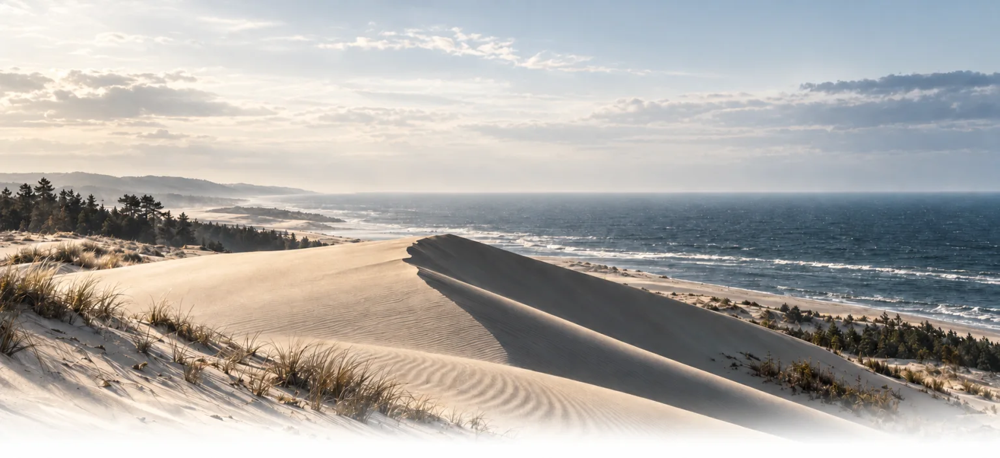
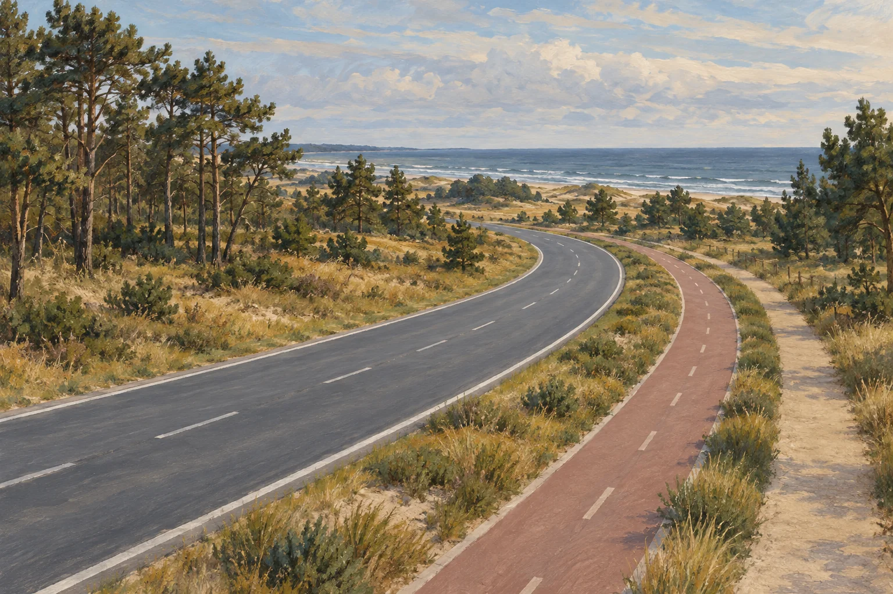

Зеленоградск за 1 день: маршрут по часам
От вокзала к кирхе и кофе, затем коты, Курортный проспект, рыбный обед и море. Один пеший день с картой, обратным поездом и персональным PDF.

Оценка сценария: ≈ 7 ч
Посмотреть маршрутСвет на сайте
Сегодня · Калининград
В режиме «Авто» свет меняется вместе с солнцем.
Начало астрономической ночи для этих суток не рассчитано.
Спланировать вечерБраузер не сохранил выбор. На этой странице режим работает.
Балтийский
характер
рядом

GoDune · люди, места, поездки
Куда пойти, что меняется и как провести день у моря.
Выберите дату, проверьте план на дождь и сохраните день в поездку.
Собрать день в ЗеленоградскеМатериалов в ленте: 43
От вокзала к кирхе и кофе, затем коты, Курортный проспект, рыбный обед и море. Один пеший день с картой, обратным поездом и персональным PDF.
Оценка сценария: ≈ 7 ч
Посмотреть маршрутИзменение касается поезда № 6312 с Южного вокзала Калининграда. КППК связала его с ремонтными работами.

Изменение затрагивает рейс № 6312 с Южного вокзала Калининграда. В коротком объявлении КППК нет нового времени отправления по часам и минутам.
| Параметр | По официальному сообщению |
|---|---|
| Дата изменения | 21 октября 2026 года |
| Поезд | № 6312, Калининград-Южный — Багратионовск |
| Отправление | На 10 минут раньше обычного |
Причина изменения — ремонтные работы.
Найдите в расписании № 6312 на 21 октября и приходите с учётом более раннего отправления.
Редакция GoDune · источники в материале
Место встречи уточняется · Остров Канта: сквозь время. Точное место встречи уточните у организатора перед поездкой.

Источник: Кафедральный собор Калининграда · проверено 2026-10-21
Дата, место и условия входаАвтобусом 210 из Зеленоградска — на высоту Эфа или в Танцующий лес. Выберите тропу и обратный рейс в одном сценарии.

На целый день · автобус и прогулки
Посмотреть маршрутДва отправления из Калининграда и два обратных рейса. Утренний обратный поезд приходит на Северный вокзал, дневной — на Южный.
КППК назначила дополнительные пригородные поезда между Калининградом и Гурьевском-Новым. Они будут ходить по выходным и праздничным дням.
| Параметр | По официальному сообщению |
|---|---|
| Из Калининграда утром | Южный вокзал 10:32 → Гурьевск-Новый 10:58 |
| Из Калининграда днём | Северный вокзал 14:00 → Гурьевск-Новый 14:19 |
| Обратно утром | Гурьевск-Новый 11:17 → Северный вокзал 11:37 |
| Обратно днём | Гурьевск-Новый 14:45 → Южный вокзал 15:12 |
25 октября — воскресенье. На предшествующую субботу, 24 октября, это добавление не распространяется.
Проверьте вокзал возвращения: утренний поезд приходит на Северный, дневной — на Южный. Это влияет на продолжение городского дня.
Редакция GoDune · источники в материале
Кафедральный собор · Органный зал · Органный мини-концерт

Источник: Кафедральный собор Калининграда · проверено 2026-10-21
Дата, место и условия входаНачните с пекарни «Хлеб», пообедайте в «Рыбном кафе на пирсе» и загляните в «Телеграф». Между остановками — прогулка.

Оценка сценария: ≈ 2 ч 24 мин · 3 остановки
Посмотреть маршрутВ вагоне деньги за билет могут списаться в течение суток. Если средств не хватило, перевозчик предлагает погасить долг через сервис РРТП.
Карта, которой вчера удалось оплатить билет в электричке, может не сработать в следующей поездке. КППК объяснила причину: мобильные кассы контролёров работают с отложенным списанием, и при недостатке денег карта попадает в стоп-лист.
| Параметр | По официальному сообщению |
|---|---|
| Где действует этот порядок | Мобильные кассы контролёров в пригородных поездах |
| Когда списывают деньги | В течение суток после оплаты билета |
| Причина стоп-листа | Недостаточно средств в момент списания |
| Где проверить долг | Сервис РРТП: rrtp.ru/unblock |
| Когда карту разблокируют | В течение суток после погашения задолженности |
| Поддержка РРТП | 8 800 100 37 87; info@rrtp.ru |
Стоп-лист не освобождает от оплаты проезда — перевозчик отдельно напоминает об этом в инструкции.
Откройте инструкцию КППК и перейдите из неё в сервис РРТП для погашения долга. С учётом срока разблокировки оплата прямо перед посадкой не гарантирует, что та же карта сразу сработает.
Редакция GoDune · источники в материале
Кафедральный собор · Музей Иммануила Канта · Знакомство с музеем Иммануила Канта
Источник: Кафедральный собор Калининграда · проверено 2026-10-21
Дата, место и условия входаКороткий путь от станции Зеленоградск-2. Полчаса у воды и возвращение.
Оценка сценария: ≈ 1 ч
Посмотреть маршрутМузей выбирает подрядчика для проекта «Хранители времени». Колонны находятся в постоянной экспозиции цокольного этажа.
Калининградский музей изобразительных искусств готовит локальный ремонт колонн в постоянной экспозиции «Город Гофмана». Подрядчика ещё определяют через конкурс.
| Параметр | По официальному сообщению |
|---|---|
| Где планируют работы | «Город Гофмана», цокольный этаж музея |
| Что восстановят | Внешний облик белокаменных колонн с декором |
| Текущая стадия | Выбор подрядчика |
Колонны поддерживают своды цокольного этажа и входят в декор здания. Восстановление их внешнего облика включено в проект «Хранители времени».
В сообщении не названы даты начала и окончания работ или изменения прохода. Если собираетесь именно в «Город Гофмана», посмотрите последующие сообщения музея об этой экспозиции.
Редакция GoDune · источники в материале
Кафедральный собор · Органный зал · Знакомство с органным залом, заалтарным пространством и Органный мини-концерт
Источник: Кафедральный собор Калининграда · проверено 2026-10-21
Дата, место и условия входаОзеро, башня, рыбный обед и море. Поезд обратно и выбранные блюда — в одном PDF.

Оценка сценария: ≈ 7 ч 10 мин
Посмотреть маршрутВыставка «Турагентство „Романтическая перспектива“» работает с 14 октября. Билет стоит 250 рублей, возрастная отметка — 16+.
На выставке «Турагентство „Романтическая перспектива“» семь художественных туров предлагают взглянуть на Калининград через темы странствий, двойников, судьбы и вдохновения.
| Параметр | По официальному сообщению |
|---|---|
| Открыта для посетителей | С 14 октября 2026 года |
| Билет по сообщению музея | 250 ₽ |
| Возрастная отметка | 16+ |
| Где | Калининград, Ленинский проспект, 83 |
Это совместный проект Калининградского музея изобразительных искусств и московского Дома культуры «ГЭС-2». Он входит в фестиваль «Плюс-минус восемь. Владивосток — Калининград».
Выставку можно рассмотреть как часть прогулки по Калининграду, если хочется зайти в помещение и продолжить знакомство с городом через работы художников.
Редакция GoDune · источники в материале
Кафедральный собор · Органный зал · Органный мини-концерт
Источник: Кафедральный собор Калининграда · проверено 2026-10-21
Дата, место и условия входаРЖДТур предлагает тур на три дня и две ночи с начальной ценой 19 990 ₽. Посадка в поезд на Южном вокзале назначена на 22:00; авиаперелёт до Калининграда не входит в стоимость.

РЖДТур назначил отправление круизного поезда «Балтийское кольцо» на 27 ноября 2026 года. Тур рассчитан на три дня и две ночи: посадка в туристский поезд на Южном вокзале Калининграда начинается в 22:00. На странице оператора указана цена от 19 990 рублей; авиаперелёт до Калининграда в неё не входит.
| Параметр | Условия «Балтийского кольца» |
|---|---|
| Отправление | 27 ноября 2026 года |
| Продолжительность | 3 дня и 2 ночи |
| Посадка | 22:00, Калининград — Южный вокзал |
| Цена | От 19 990 ₽ |
| Авиаперелёт до Калининграда | Не входит в стоимость тура |
РЖДТур опубликовал анонс осеннего выезда 12 октября. Эта дата относится к публикации анонса; сам поезд отправляется 27 ноября 2026 года.
Время посадки и начальную цену оператор указывает в карточке тура. Проверьте там же доступность мест и условия пакета на выбранную дату.
Редакция GoDune · источники в материале
Место встречи уточняется · Прогулка на трамвае. Точное место встречи уточните у организатора перед поездкой.
Источник: Кафедральный собор Калининграда · проверено 2026-10-21
Дата, место и условия входаПервый этап «Белой Дюны» — дороги и коммунальные сети. Заявление с Балтийского бизнес-форума 9–10 октября 2026 года и параметры инфраструктуры.

Директор Корпорации развития Калининградской области Дмитрий Лапицкий сообщил об активной фазе «Белой Дюны». На форуме в Светлогорске 9–10 октября он назвал первый этап: подготовку дорог, воды, газа и электричества для будущей застройки.
| Параметр | План проекта |
|---|---|
| Территория | 479 га |
| Инвестиции | Более 400 млрд ₽ суммарно |
| Рабочие места | 17,8 тыс. — план |
| Побережье | Благоустройство более 5 км; ширина до 400 м |
| Электроснабжение | Утверждённая схема: до 48,5 МВт |
Начало подъезда от трассы Зеленоградск — Приморск через Светлогорск к курорту заявлено на 2026 год. Направление Русское — Янтарный — «Белая Дюна» проектируют.
Газопровод высокого давления намечен к 2028 году. Вода и электросети входят в поддерживающую инфраструктуру.
| Дата | Событие |
|---|---|
| Сентябрь 2025 | Одобрено 11,45 млрд ₽ инфраструктурных кредитов: коммунальные сети и путепровод Зеленоградск — Пионерский. |
| 2026 · план | Ещё 4 млрд ₽ федерального финансирования. |
| 9–10 октября 2026 | Заявление на VIII Балтийском бизнес-форуме. |
| До конца 2026 · план | Передача участков уже найденным инвесторам. |
Курорт у Поваровки входит в программу «Пять морей и озеро Байкал». Дорожный тендер опубликован 7 октября.
Для планирования отдыха нужен следующий факт — открытие конкретных объектов для гостей.
Следите за выделением участков, заключёнными контрактами и выполнением работ по каждому объекту.
Редакция GoDune · источники в материале
Кафедральный собор · Музей Иммануила Канта · Знакомство с музеем Иммануила Канта
Источник: Кафедральный собор Калининграда · проверено 2026-10-21
Дата, место и условия входаЗакупка №0335200014926003779: два дорожных участка общей длиной около 7,1 км, тротуары и велодорожки. Итоги планируют подвести 29 октября 2026 года.
Объявлен конкурс на строительство дороги к будущему курорту «Белая Дюна» у Поваровки. Начальная цена — 2 919 674 538 рублей. В закупке предусмотрены два этапа: подъезд к курорту и улица внутри его территории. Итоги конкурса планируют подвести 29 октября 2026 года.
| Параметр | В карточке конкурса |
|---|---|
| Номер закупки | 0335200014926003779 |
| Начальная цена | 2 919 674 538 ₽ |
| Извещение опубликовано | 7 октября 2026 года |
| Заказчик | ГКУ КО «Управление дорожного хозяйства Калининградской области» |
| Заявки принимают до | 26 октября, 11:00 по московскому времени |
| Подведение итогов | 29 октября 2026 года — по графику конкурса |
| Срок исполнения контракта | С заключения контракта до 28 декабря 2027 года |
Дорога от трассы Зеленоградск — Приморск через Светлогорск в районе Путилово до «Белой Дюны»: около 4,5 км, две полосы. Вдоль предусмотрены тротуар и велодорожка, отделённые от проезжей части газоном.
Магистральная улица районного значения протяжённостью 2,6 км пересечёт территорию курорта. Запланированы четыре полосы, тротуар и велодорожка. Вместе два участка составляют около 7,1 км.
| Дата | Событие |
|---|---|
| 7 октября 2026 | Опубликовано извещение о конкурсе |
| 26 октября 2026 | Завершение приёма заявок по графику |
| 29 октября 2026 | Плановое подведение итогов |
| 28 декабря 2027 | Предельный срок исполнения контракта |
«Белая Дюна» — проект нового курорта на побережье Балтийского моря у Поваровки. Дорожная закупка относится к его транспортной инфраструктуре. Параметры курорта, расположение и опубликованные документы собраны в нашем путеводителе по проекту.
В проекте есть отдельные пути для пеших прогулок и велосипеда. Пока они запланированы именно вдоль этих участков: непрерывный веломаршрут из Зеленоградска закупка сама по себе не подтверждает. До поездки важен следующий этап — открытие дороги для движения.
Конкурс — конкретный шаг подготовки территории. После него стоит смотреть на заключение контракта и фактическое выполнение работ. Срок дорожного контракта не обозначает открытие гостиниц, начало продаж или сдачу отдельных объектов.
В конце октября должен появиться результат конкурса. Он позволит узнать подрядчика и условия заключённого контракта. Сейчас победитель ещё не определён.
Подъезд свяжет территорию будущего курорта с существующей трассой. При выполнении проекта вдоль него появятся тротуар и велодорожка. Организацию движения на время работ предстоит уточнять по сообщениям заказчика и подрядчика.
Редакция GoDune · источники в материале
Кафедральный собор · Органный зал · В гостях у органного мастера
Источник: Кафедральный собор Калининграда · проверено 2026-10-21
Дата, место и условия входаМорской выставочный центр Музея Мирового океана · Музейный лекторий «Клуб путешественников».

Источник: Музей Мирового океана · Морской выставочный центр · проверено 2026-10-21
Дата, место и условия входаКафедральный собор · Музей Иммануила Канта · Знакомство с музеем Иммануила Канта
Источник: Кафедральный собор Калининграда · проверено 2026-10-21
Дата, место и условия входаМесто встречи уточняется · Прогулка на трамвае. Точное место встречи уточните у организатора перед поездкой.
Источник: Кафедральный собор Калининграда · проверено 2026-10-21
Дата, место и условия входаКафедральный собор · Органный зал · Органный мини-концерт
Источник: Кафедральный собор Калининграда · проверено 2026-10-21
Дата, место и условия входаКалининградский областной драматический театр · Основная сцена · По мотивам романа Фёдора Достоевского
Источник: Калининградский областной драматический театр · проверено 2026-10-21
Дата, место и условия входаКалининградская областная филармония · Абонемент №2 «Музыка и живопись»
Источник: Калининградская областная филармония им. Е.Ф. Светланова · Это – русские картины · проверено 2026-10-21
Дата, место и условия входаМесто встречи уточняется · Остров Канта: сквозь время. Точное место встречи уточните у организатора перед поездкой.
Источник: Кафедральный собор Калининграда · проверено 2026-10-21
Дата, место и условия входаКафедральный собор · Органный зал · Органный мини-концерт
Источник: Кафедральный собор Калининграда · проверено 2026-10-21
Дата, место и условия входаКафедральный собор · Музей Иммануила Канта · Знакомство с музеем Иммануила Канта
Источник: Кафедральный собор Калининграда · проверено 2026-10-21
Дата, место и условия входаКафедральный собор · Органный зал · Знакомство с органным залом, заалтарным пространством и Органный мини-концерт
Источник: Кафедральный собор Калининграда · проверено 2026-10-21
Дата, место и условия входаКафедральный собор · Органный зал · Органный мини-концерт
Источник: Кафедральный собор Калининграда · проверено 2026-10-21
Дата, место и условия входаКафедральный собор · Органный зал · Трамвай времени. Она начинается с органного мини-концерта в Соборе.
Источник: Кафедральный собор Калининграда · проверено 2026-10-21
Дата, место и условия входаКафедральный собор · Музей Иммануила Канта · Знакомство с музеем Иммануила Канта
Источник: Кафедральный собор Калининграда · проверено 2026-10-21
Дата, место и условия входаКафедральный собор · Касса Собора · В поисках Канта. Место встречи и начала экскурсии — касса Собора.
Источник: Кафедральный собор Калининграда · проверено 2026-10-21
Дата, место и условия входаМорской выставочный центр Музея Мирового океана · Музейный лекторий «Клуб путешественников».
Источник: Музей Мирового океана · Морской выставочный центр · проверено 2026-10-21
Дата, место и условия входаОрганный зал «Макаров» · В программе: И.С. Бах, М. Дюрюфле, Феликс Мендельсон, Габриэль Пьерне
Источник: Органный зал «Макаров» · проверено 2026-10-21
Дата, место и условия входаКафедральный собор · Музей Иммануила Канта · Знакомство с музеем Иммануила Канта
Источник: Кафедральный собор Калининграда · проверено 2026-10-21
Дата, место и условия входаМесто встречи уточняется · Прогулка на трамвае. Точное место встречи уточните у организатора перед поездкой.
Источник: Кафедральный собор Калининграда · проверено 2026-10-21
Дата, место и условия входаКалининградская областная филармония · Концертный зал. 6+. Пятница. 18:00
Калининградский областной драматический театр · Основная сцена · Семейная драма по мотивам пьесы Александра Островского
Источник: Калининградский областной драматический театр · проверено 2026-10-21
Дата, место и условия входаКафедральный собор · Органный зал · Симфоническая пятница
Источник: Кафедральный собор Калининграда · проверено 2026-10-21
Дата, место и условия входаТеатр эстрады «Янтарь-Холл» · Огни Анатолии
Источник: Театр эстрады «Янтарь-Холл» · Огни Анатолии · проверено 2026-10-21
Дата, место и условия входаВыберите другое место или раздел. Отсутствие записи в нашей афише не означает, что в городе нет событий.
Все события →